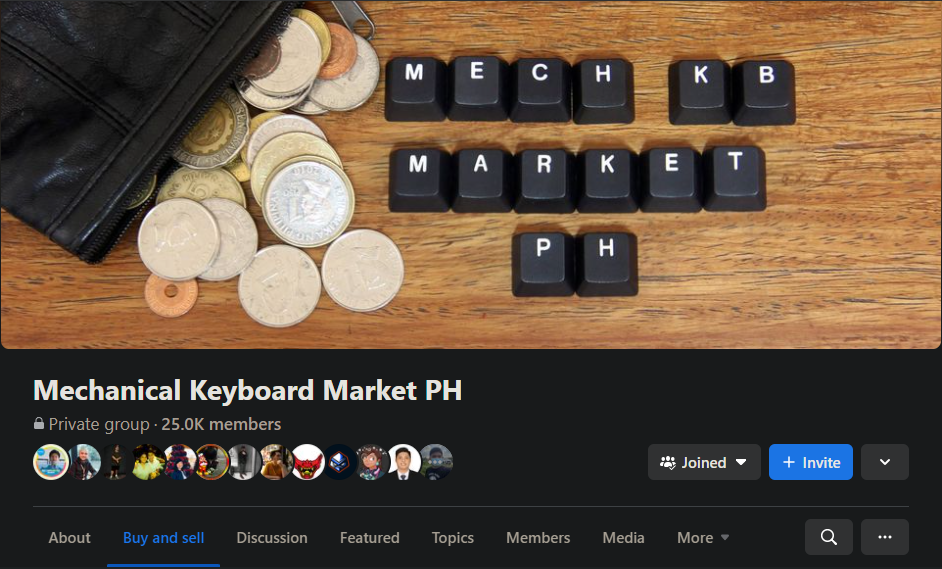

Buying and picking parts are, a lot of the time, more confusing than actually building a keyboard. With all the different parts from different manufacturers, with different sizes and terms, choosing compatible components can be a complicated cacophonous chore. All the options and choices with miniscule differences are not very beginner friendly, making it hard to make sure that what you're picking is correct. This will cover many basics of keyboard part picking and buying.
Groupbuy vs Aftermarket vs In stock
If you’ve tried looking for parts, you’ve likely seen these terms before. These simply refer to ways you can get keyboard related products.
1. Groupbuy
A groupbuy is when many consumers pre-order keyboard parts, usually keycaps or cases, from a vendor or designer. When enough consumers pre-order the manufacturer will then produce the items. If not enough people want the product, it won’t be manufactured. This is done for the vendor and manufacturer to save costs because they only produce the designs that people actually want. Groupbuys are sometimes risky, due to designers sometimes not delivering on the promised products, and the final product can take well over a year to ship from the start of the process. However, many people still participate in these because of the appeal of custom-made high-quality products. Many people can host groupbuys, from established vendors like KBDFans or Novelkeys to independent designers looking for their work to be made.
Video - "Tips on How To Enter Your First Group Buy..." by Andy Nguyen
r/mechmarket and Mech Market PH are popular resell groups for buying and selling
2. Aftermarket
The aftermarket is the keyboard term for the reselling market. It is full of group-buy products that people resell at a much higher price. For example, if some GMK keycaps sell at a groupbuy for 100 dollars, it could see prices of more than 500 dollars in the aftermarket purely because of their demand and rarity. Unless you really really want a product and you are willing to pay much more than its original price, it’s usually not recommended to buy from here.
3. In stock
Despite popular belief, there are many in stock products that can be bought for cheap from everywhere. They are products that you can just buy from vendors like KBDFans, Novelkeys, or even Shopee or Lazada. Sometimes, premium items can even be found in physical stores like Datablitz. These are usually cheaper and obviously much more available than group-buy items. This is the best to buy for beginners because of the low cost, low commitment, and fast shipping time (usually).
Video - "In Stock Custom Mechanical Keyboards..." by Andy Nguyen
Form factors
The form factor of a keyboard should be one of the most important things to consider when picking parts. It can range from a small 60% to a large full-size keyboard. As a general rule, it is good to go as small as comfortable. I personally main a 65% keyboard, because I really need arrow keys, but I don’t use anything bigger because the function row and most navigation keys aren’t too important to me. Going smaller is usually better because it provides more mouse space, which is great especially when gaming.
When picking individual parts, looking at the form factor is a great way to rule out some parts. A 60% plate can’t be used with a full-size PCB. ANSI, ISO, or other alternative layouts also need to be considered when picking parts.
Like everything in the hobby, this is about preference, but also like everything in the hobby, people love to promote one size as "the best" size. I'd suggest following the guide to the right, or this video by TaeKeyboards.
Some switches have the 3 mandatory pins, while others have 5 pins for more stability. However, most PCBs only have 3 pin holes for the switches. You can cut the extra pins off though, but it requires more work.
North-facing switches
If the PCB makes the switches face upwards instead of downwards, it is possible to have interference when using cherry profile keycaps. Interference is when the keycap touches the switch when pressing it, making it sound and feel worse. To be safe, it is best to avoid using cherry keycaps with north-facing switches. The product details of a PCB will usually say if it is north or south-facing.
Plate-mounted vs. PCB-mounted stabilizers
Some PCBs don’t support PCB-mount stabilizers, needing you to buy plate-mount stabs. Most cheaper PCBs in cheaper kits are like this.
Keycap layout issues
If the PCB needs specific keycap sizes, like a smaller shift key, your keycap set needs to have that smaller shift key. More expensive sets usually have almost all possible keys to cover all possible layouts. You see if your keyboard needs any abnormal keys and make sure to get a set that has that, lest the set become almost unusable.